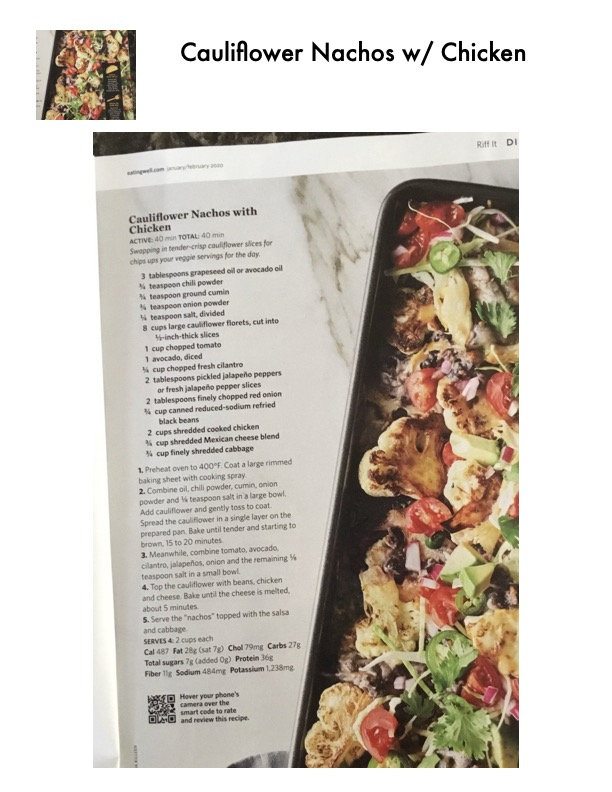

Cauliflower Nachos with Chicken

Original cookbook page 55
Swapping in tender-crisp cauliflower slices for chips ups your veggie servings for the day.
Prep: 20 minutes • Cook: 20 minutes • Total: 40 minutes
Ingredients
- 3 tablespoons grapeseed oil or avocado oil
- 1/2 teaspoon chili powder
- 1/2 teaspoon ground cumin
- 1/2 teaspoon onion powder
- 3/4 teaspoon salt, divided
- 8 cups large cauliflower florets, cut into 1/4-inch-thick slices
- 1 cup chopped tomato
- 1 avocado, diced
- 1/4 cup chopped fresh cilantro
- 2 tablespoons pickled jalapeño peppers or fresh jalapeño pepper slices
- 2 tablespoons finely chopped red onion
- 1/4 cup canned reduced-sodium refried black beans
- 2 cups shredded cooked chicken
- 1/2 cup shredded Mexican cheese blend
- 1/4 cup finely shredded cabbage
Instructions
- Preheat oven to 400°F. Coat a large rimmed baking sheet with cooking spray.
- Combine oil, chili powder, cumin, onion powder and 1/2 teaspoon salt in a large bowl. Add cauliflower and gently toss to coat. Spread the cauliflower in a single layer on the prepared pan. Bake until tender and starting to brown, 15 to 20 minutes.
- Meanwhile, combine tomato, avocado, cilantro, jalapeños, onion and the remaining 1/4 teaspoon salt in a small bowl.
- Top the cauliflower with beans, chicken and cheese. Bake until the cheese is melted, about 5 minutes.
- Serve the "nachos" topped with the salsa and cabbage.
Recipe #55 from collection